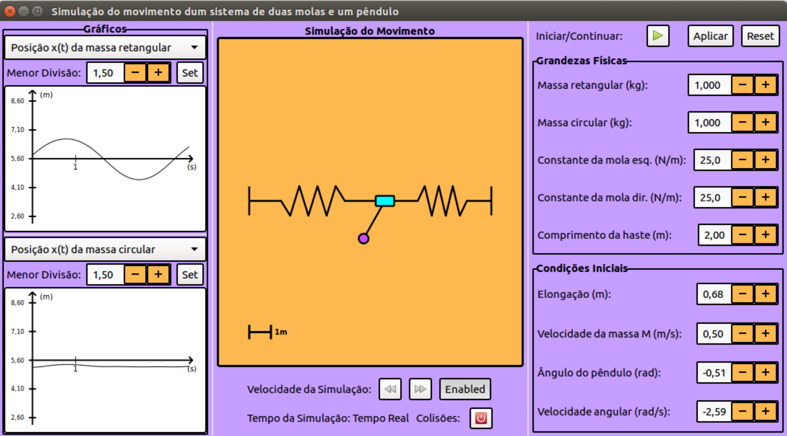

Puzzle da unitariedade da matriz CKM com simetrias Abelianas de sabor
O Modelo Padrão (MP) de física de partículas é um dos maiores feitos teóricos da Física. Este descreve
com sucesso três das quatro interações fundamentais (eletrofraca e forte) entre as partículas
elementares conhecidas pela Humanidade. Contudo, hoje sabemos que o MP é uma teoria incompleta! Por
exemplo, as oscilações de neutrinos, que indicam que estas partículas têm massa e que existe mistura
leptónica, é um fenómeno que exige física além do MP para ser explicado. Assim, qualquer evidência ou
dica experimental que contradiz o MP é crucial, uma vez que estas ajudam físicos a compreender melhor o
Universo.
Na minha tese, eu foco-me num desenvolvimento recente na medição da primeira linha da matriz
Cabibbo-Kobayashi-Maskawa, que apresenta um desvio em relação à mistura unitária de quarks prevista pelo
MP. Este desvio é conhecido por anomalia do ângulo de Cabibbo. O modelo proposto é uma extensão
do MP com quarks do tipo vector. Para além disto, de forma a aumentar a predictividade da teoria,
o número de parâmetros livres nas matrizes de massa e de Yukawa é reduzido impondo zeros de
textura resultantes de simetrias Abelianas de sabor. Para este efeito, o MP tem de ser
extendido com um segundo dubleto de Higgs. Para mais detalhes, podes ler a minha tese aqui.
Ao longo deste projecto aprendi de forma autónoma Python, com ênfase nas bibliotecas
Numpy e
iMinuit, tendo desenvolvido vários módulos para obter a maioria dos resultados da minha tese. Os
gráficos foram feitos com recurso à biblioteca matplotlib. O código está na minha página Github.
Esta webpage
Sim, eu sei que é um pouco "meta" referir a minha webpage pessoal como um projecto na minha webpage
pessoal... Enfim, vou parar de dizer webpage pessoal que isto está a tornar-se constrangedor...
Enquanto assistia à aula do curso CS50 sobre HTML, CSS e Javascript, eu decidi
desafiar-me a criar este website. O objectivo era fomentar um conhecimento básico sobre estas
ferramentas fundamentais em desenvolvimento web e construir este projecto de raiz.
Depois de muitas horas a ler documentação e guias no MDN
Web docs e CSS tricks, eu aprendi conceitos
como CSS selectors e properties, o modelo layout Flexbox, manipulações básicas de DOM com
Javascript e web design responsivo.
Este projecto é apenas a ponta do iceberg que constitui web development, e ainda há muito a aprender.
Não obstante, penso que os meus objectivos foram cumpridos e estou satisfeito com o resultado final.
Todos temos de começar nalgum lado!
Simulação de duas molas presas a um pêndulo
Este projecto consiste numa GUI que permite ao utilizador controlar vários parâmetros da
simulação.
A UI consiste em 3 painéis:
- Gráficos: exibe dois gráficos em tempo real referentes ao movimento. O utilizador pode
escolher dentre uma variedade de sistemas de coordenadas.
- Simulação: mostra o movimento das massas e permite o controlo da velocidade de simulação e
colisão com paredes.
- Grandezas Físicas e Condições Iniciais: permite o controlo sobre os parâmetros físicos das
massas e molas e a definição das condições inicias do movimento.
Este programa foi escrito em C, e a GUI foi construída com a biblioteca GTK+. Podes
verificar o código aqui.
